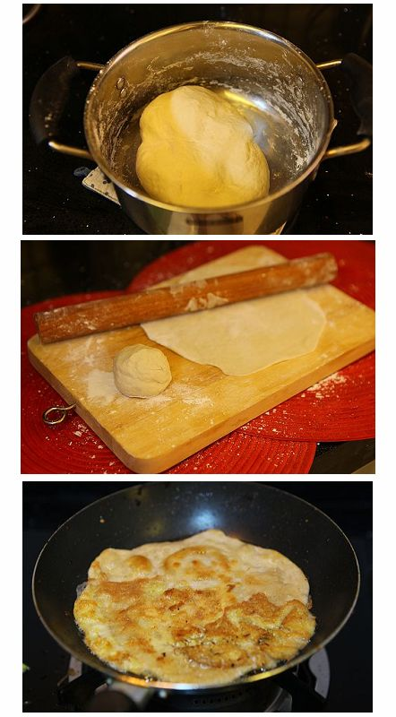

第一次烙饼 @ Sep 29, 2010
对于一个爱吃各种面饼的人，自己烙饼的愿望早已埋入心中。在看了龙竞的韭菜饼与问问的灌蛋饼之后，想要实现该愿望便愈发的迫切。
今日下班早，回家取出早已购回的面粉，揉面。开始比较稀，不断加入面粉，一个小面团渐渐变成一个大面团，起初用木勺子拌面，接着直接用手进去揉，揉面真不是件轻松活。揉好后，心中铭记龙竞写的“十分钟醒面”，这十分钟用来搅拌5只鸡蛋。
按照想象中将面揪成一小块一小块，揉成球状，用老妈给的擀面杖擀面，面团不是粘住擀面杖，就是拉扯着切菜板，怎么能分离面与其他物体呢？于是，沾了菜油来擀面，效果照旧。不得已，打电话求助老妈，电话那头传来老妈“哈哈哈”爽朗的笑声，“你得撒点面粉。。。”果然效果很好。我擀啊擀啊擀啊，脑海里想着问问擀出的椭圆型，可实际擀出的摸样完全是多边型的。。。
总算熬到下锅了，如何也无法把鸡蛋灌进饼的夹层中去？我...我...我只好自由发挥成洒在饼的表层，这也算鸡蛋饼吧？！
顾不得红豆稀饭，先来一口饼尝尝，不知不觉中吞下两块死面饼，把自己给腻住了。我揉着胃，泡了一杯凤凰单枞来剐油。。。希望今夜不要被面饼给搅了睡眠。
没想到，看起来简单的烙饼，做起来如此麻烦。处女饼的经历实属狼狈不堪，我被这个经历小小的打击了。

18 Responses to “第一次烙饼”
2010-09-29
哈哈哈，其实还蛮好的，我小时候做的也无法弄圆，这样的活得从包饺子下手~~~。揉面这粗活我都丢给面包机了~。用不粘锅来烙饼，不油腻
2010-09-29
那个灌饼其实挺难的。要戳一个洞，再细细的灌进去，我也灌的一塌糊涂。。。：目
2010-09-29
面包机可以帮忙揉面？！
以为灌蛋饼是擀两张饼，粘一起后再下锅。。。总之，这次挺受打击的，也被腻住了，下次不知道有没有勇气再烙饼了？手忙脚乱的。
2010-09-29
看着不错呢。为什么会有腻的感觉呢？油太多？
2010-09-30
看起来好像有点油腻。只做过蛋糕没做过饼~~
2010-09-30
不错，能烙饼了，最好这七天休假多整点好吃滴，等我国庆回来吃~ 嘻嘻
2010-09-30
三十而立，开始烙饼，哈哈，
标题应为：“职业妇人的开始”
2010-09-30
做面食看似容易拿捏很难，这处女饼压根儿看不出是个新手的杰作，thumbs up!
2010-10-01
恭喜你，你发明了披萨饼！哈哈。
2010-10-01
It looks terrible.
2010-10-01
真的不像是第一次做呢，喜欢你的小平底锅。另外，醒面的时候用保鲜膜包起来，表面不会被风干。
2010-10-02
尽管这个不那么精致，还是让人馋的流口水
爱生活 爱吃饭
2010-10-02
有时间请联系我一下，有关相机的问题想请教你。谢谢
2010-10-03
需要问什么，发我邮箱吧～
2010-10-08
邮件已发，请查收。
2010-10-08
好久没有更新了啊
2010-10-10
好能干哟,第一次做成这样很不错了!等吃~~~
2010-10-11
嗯，这是第一次欣赏清晰版的多边形蛋包饼。卖相还好，没有烙焦。嘻嘻。
Leave A Reply
存档只读，评论已关闭。